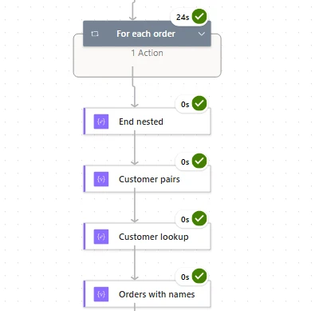
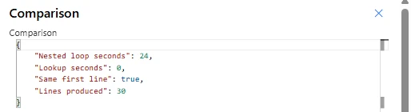

- Power Automate
- Level 5 · Performance and scale · 3 of 6
Avoiding nested loops
A common need: you have a list of orders that hold a customer ID, and a list of customers that hold the name. You want each order with its customer name. The first idea is a loop inside a loop. It works, but the number of actions is the size of one list times the size of the other.
The same answer, 24 seconds against 0
The demo has 30 orders and 5 customers. Version one loops over the orders and, inside, filters the customer list. Version two builds a lookup object once and reads names from it.


Building the lookup object
The trick is to turn the customer list into one object where each key is an ID and each value is a name. Then finding a name is a single property read, not a search.

Step 1, Customer pairs: a Select in text mode that turns each customer into a "id":"name" fragment.
concat('"', string(item()?['id']), '":"', item()?['name'], '"')| Piece | What it does |
|---|---|
string(item()?['id']) | The ID as text, because object keys are text. |
concat('"', ..., '":"', ..., '"') | Wraps the key and value in quotes with a colon between: "1":"Contoso". |
Step 2, Customer lookup: a Compose that joins the fragments and turns them into a real object.
json(concat('{', join(body('Customer_pairs'), ','), '}'))| Piece | What it does |
|---|---|
join(..., ',') | Puts commas between the fragments. |
concat('{', ..., '}') | Adds the curly brackets around them. |
json(...) | Turns the text into an object the flow can read. |
Step 3, Orders with names: a Select over the orders that reads the name straight from the lookup.
outputs('Customer_lookup')?[string(item()?['customerId'])]| Piece | What it does |
|---|---|
outputs('Customer_lookup') | The lookup object. |
?[string(item()?['customerId'])] | Reads the property whose key is this order's customer ID. The ? returns null instead of failing if the ID is missing. |
New to this? Start from the basics optional
Nested loop: an Apply to each inside another. With 1,000 orders and 1,000 customers it can mean a million actions.
Lookup object: a JSON object used like a dictionary. You read a value by its key in one step.
Text mode in Select: switch the Map box to text so each item becomes a string, not an object.
Build it step by step optional
- Get both lists (for example with List rows or Get items).
- Add Select on the smaller list, switch Map to text mode, and enter the concat expression above.
- Add Compose with the json(concat(...join...)) expression.
- Add Select on the main list. Map each field you need, and for the name use the lookup expression.
- Test with a few items and compare the result with the old loop before you remove it.
Common mistakes
- Forgetting
string()on a number ID. The key lookup then returns nothing. - Names that contain a double quote break the JSON. Clean them with
replace()first, or use a Filter array inside a Select instead. - Duplicate IDs. Only the last one survives in the object.